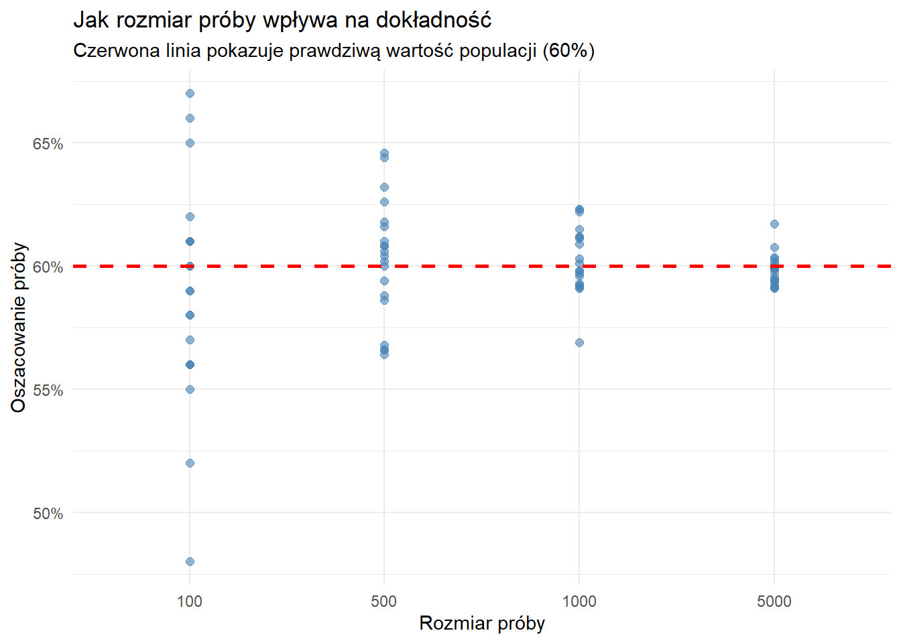
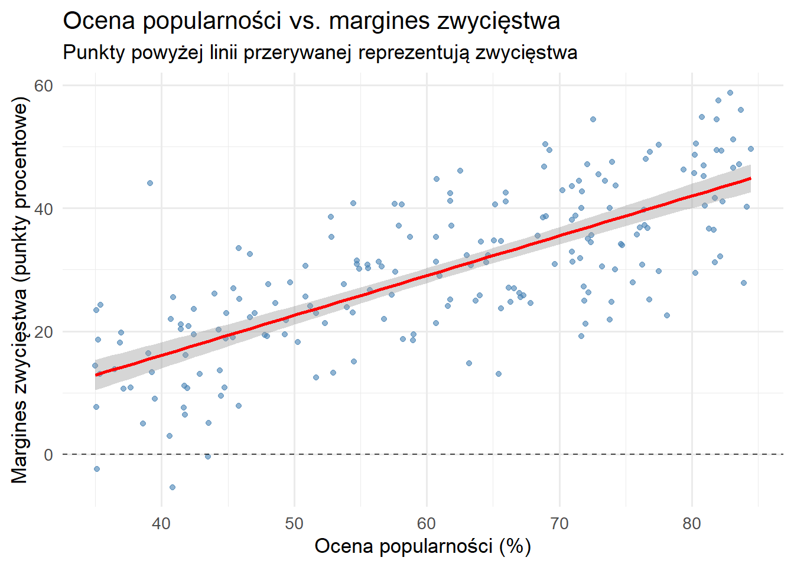

2Wprowadzenie do statystyki i analizy danych dla politologii
2.1 Czym jest statystyka?
Statystyka to nauka o tym, jak zbierać, opisywać i wyciągać wnioski z danych w warunkach niepewności. W praktyce dostarcza:
Projektowania badań: planowania gromadzenia danych w sposób systematyczny i o możliwie małej stronniczości (ankiety, eksperymenty, dane administracyjne, tekst jako dane).
Opisu: podsumowywania tego, co pokazują dane (tabele, wykresy, miary położenia i zmienności).
Wnioskowania: formułowania wniosków o populacji na podstawie próby (estymacja i testowanie hipotez).
Modelowania: przedstawiania zależności między zmiennymi w celu wyjaśniania lub przewidywania wyników (np. regresja).
Wsparcia decyzyjnego: porównywania działań, gdy wyniki są niepewne (ewaluacja polityk publicznych, analiza kosztów i korzyści).
Przykłady z politologii
Oszacowanie ogólnokrajowego poparcia dla partii na podstawie warstwowej ankiety.
Ocena, czy pocztówka mobilizująca do głosowania (GOTV) zwiększa frekwencję.
Badanie związku między wielkością okręgu (liczbą mandatów) a fragmentacją systemu partyjnego.
Note
Kluczowa myśl: Statystyka nie usuwa niepewności; pomaga nią zarządzać i komunikować ją w sposób przejrzysty.
2.2 Nastawienie statystyczne
Nastawienie statystyczne akcentuje jasne pytania, trafne porównania, rzetelny pomiar, przejrzyste modelowanie, rutynowe kontrole oraz jawne raportowanie niepewności. Pięć nawyków jest szczególnie istotnych.
1) Uznawaj niepewność
Wartości populacyjne rzadko są znane dokładnie. Każdy wynik liczbowy traktuj jako oszacowanie z towarzyszącą mu niepewnością. Przykład: „Szacowane poparcie wynosi 52% (95% PU: 49%–55%), na podstawie losowej próby 1200 dorosłych.”
2) Myśl w kategoriach zmienności
Różnice między osobami, miejscami i czasami umożliwiają uczenie się. Rozróżniaj zmienność losową (wynikającą z losowania próby) od zmienności systematycznej (instytucje, demografia, bodźce). Przykład: Różnice we frekwencji mogą wynikać z pogody (losowe) oraz ze złożoności karty wyborczej (systematyczne).
3) Porównuj w sposób uczciwy (asocjacja vs. przyczynowość)
Dwie zmienne mogą się współzmieniać (asocjacja) bez związku przyczynowego. Twierdzenia o przyczynowości wymagają uczciwego porównania: co stałoby się z tym samym obiektem przy innym warunku, przy stałości pozostałych czynników (wynik kontrfaktyczny). Przykład: Gminy z większą liczbą wizyt kampanijnych często mają wyższą frekwencję. Konkurencyjność może jednocześnie przyciągać wizyty i podnosić frekwencję. Aby twierdzić, że wizyty zwiększają frekwencję, potrzebny jest wiarygodny projekt badania (randomizacja, eksperyment naturalny, dyskontynuacja regresji itp.).
Caution
Zanim sformułujesz wniosek przyczynowy
Czy porównanie jest jasno zdefiniowane i wiarygodne?
Czy czynnik trzeci (konfounder) może wpływać na obie zmienne i jak został uwzględniony (projekt, analiza)?
Czy założenia są jawnie podane i – na ile to możliwe – sprawdzone?
4) Sprawdzaj rzetelność
Pozorne regularności mogą wynikać z losowości próbkowania lub wyboru modelu. Wykorzystuj błędy standardowe, przedziały oraz replikację, aby ocenić stabilność. Preferuj wielkości efektu z przedziałami zamiast dychotomicznych etykiet „istotne/nieistotne”. Przykład: „Frekwencja wzrosła o 2,3 punktu procentowego (95% PU: 0,8–3,8).”
5) Rozważaj alternatywne wyjaśnienia
Dla każdego wniosku wypisz wiarygodne alternatywy i – jeśli to możliwe – je testuj (analizy odporności, testy placebo, testy falsyfikacyjne). Przykład: Jeśli uczestnictwo w grupach nauki koreluje z lepszymi ocenami, oceń selekcję: uczniowie o lepszych wcześniejszych wynikache mogą częściej wybierać naukę w grupach.
2.3 Etapy analizy statystycznej
Pytanie badawcze – co chcesz oszacować (estimand)?
Projekt badania – jak uzyskasz wiarygodne porównanie?
Zbieranie danych – procedury, próbkowanie, jakość pomiaru.
Eksploracja danych (EDA) – wstępne wzorce, czyszczenie, wizualizacje.
Modelowanie – opis, przewidywanie lub wnioskowanie przyczynowe.
Wnioski i komunikacja – efekt z przedziałem ufności/wiarygodności, ograniczenia.
Na każdym etapie określ:
wielkość docelową (estimand),
założenia, na których się opierasz,
sposób wyrażenia niepewności.
2.4 Niezbędne pojęcia
Populacja: zbiór, o którym chcemy się uczyć (np. wszyscy uprawnieni do głosowania).
Próba: część populacji, którą obserwujemy (np. 1200 ankietowanych).
Parametr: stała, lecz nieznana wielkość populacyjna (np. prawdziwe poparcie).
Statystyka (z próby): liczba obliczona na podstawie próby (np. średnia z próby).
Oszacowanie (estymata): najlepsza ocena parametru na podstawie danych (np. \hat{p}).
Błąd standardowy (SE): oszacowana zmienność oszacowania w powtarzanych próbach.
Przedział ufności (PU): zakres, który – przy wielokrotnym próbkowaniu – zawierałby parametr z określonym prawdopodobieństwem (np. 95%).
Efekt przyczynowy: zmiana wyniku po zmianie bodźca dla tego samego obiektu.
Konfounder (czynnik zakłócający): zmienna wpływająca zarówno na bodziec, jak i na wynik, co może tworzyć mylną asocjację.
2.5 Populacja vs. próba: podstawa wnioskowania
Fundamentalne wyzwanie
W politologii często interesuje nas zrozumienie całych populacji - kompletnego zbioru jednostek, które chcemy badać. Jednak badanie całych populacji jest zwykle niemożliwe, niepraktyczne lub niepotrzebne.
Co może być populacją?
Populacja w politologii może składać się z różnych typów jednostek:
Jednostki indywidualne
Populacja: Wszyscy 240 milionów amerykańskich dorosłych
Próba: 1000 losowo wybranych dorosłych w sondażu
Pytanie badawcze: Jaki procent popiera powszechną opiekę zdrowotną?
Kraje
Populacja: Wszystkie 195 suwerennych narodów na świecie
Próba: 50 krajów z różnych regionów i poziomów rozwoju
Pytanie badawcze: Czy demokracja koreluje ze wzrostem gospodarczym?
Jednostki subpaństwowe
Populacja: Wszystkie 3143 hrabstwa amerykańskie
Próba: 200 losowo wybranych hrabstw
Pytanie badawcze: Jak bezrobocie wpływa na wskaźniki przestępczości?
Organizacje
Populacja: Wszystkie organizacje pozarządowe zarejestrowane w ONZ
Próba: 100 NGO działających w różnych obszarach polityki
Pytanie badawcze: Jakie czynniki przewidują skuteczność NGO?
Wydarzenia lub okresy czasu
Populacja: Wszystkie wybory przeprowadzone w Europie od 1945 roku
Próba: 300 wyborów z różnych krajów i dekad
Pytanie badawcze: Jak warunki ekonomiczne wpływają na poparcie dla urzędujących?
Jednostki legislacyjne
Populacja: Wszystkie projekty ustaw wprowadzone do Kongresu w latach 2000-2020
Próba: 500 losowo wybranych projektów ustaw
Pytanie badawcze: Co przewiduje, czy projekt ustawy stanie się prawem?
Rozwiązanie próbkowe i kluczowa obserwacja
Próba (sample) to podzbiór populacji, który faktycznie obserwujemy i mierzymy. Kluczowa obserwacja statystyki jest taka, że możemy uczyć się o populacjach badając próby - jeśli jesteśmy ostrożni w sposobie ich wybierania.
Z naszej próby chcemy dokonać wnioskowań (inferences) o populacji:
Na przykład: Jeśli 52% naszej próby popiera Kandydata A (\hat{p} = 0,52), co możemy powiedzieć o poparciu w całej populacji (\pi)?
Podstawowa zasada: losowy wybór (random selection) daje każdej jednostce w populacji równą szansę zostania włączoną, zapobiegając systematycznej stronniczości.
Wizualizacja próbkowania
Zobaczmy, jak różne rozmiary prób wpływają na nasze oszacowania:
# Symulacja próbkowania z populacjipopulation_size <-1000000true_proportion <-0.60# Prawdziwy parametr populacji (π)# Weź próby o różnych rozmiarachsample_sizes <-c(100, 500, 1000, 5000)results <-data.frame()for (size in sample_sizes) {for (i in1:20) { sample_result <-rbinom(1, size, true_proportion) / size results <-rbind(results, data.frame(size = size, trial = i,estimate = sample_result)) }}# Wizualizacjaggplot(results, aes(x =factor(size), y = estimate)) +geom_point(alpha =0.6, size =2, color ="steelblue") +geom_hline(yintercept = true_proportion, color ="red", linetype ="dashed", size =1) +labs(title ="Jak rozmiar próby wpływa na dokładność",subtitle ="Czerwona linia pokazuje prawdziwą wartość populacji (60%)",x ="Rozmiar próby",y ="Oszacowanie próby") +theme_minimal() +scale_y_continuous(labels = scales::percent)

Uwaga do wykresu: Ten wykres rozrzutu pokazuje, jak rozmiar próby wpływa na dokładność oszacowań. Każda niebieska kropka reprezentuje jedno oszacowanie próby. Zauważ, jak większe próby (prawa strona) skupiają się bardziej wokół prawdziwej wartości populacji (czerwona linia przerywana), ilustrując zmniejszoną zmienność próbkowania.
Kluczowy wniosek: To demonstruje prawo wielkich liczb - gdy rozmiar próby rośnie, nasze oszacowania stają się bardziej wiarygodne. Przy n=100 oszacowania mocno się różnią (55-65%), ale przy n=5000 są znacznie precyzyjniejsze (59-61%). Dlatego sondaże ogólnokrajowe zazwyczaj badają 1000+ osób, a nie 100.
Problem reprezentatywności
Nie wszystkie próby są równe. Rozważmy te metody próbkowania:
Próba wygodna (convenience sample): Badanie studentów w twojej klasie politologii
Problem: Niereprezentacyjne dla wszystkich wyborców
Przykład: Studenci college’u są młodsi i bardziej liberalni niż ogólna populacja
Próba dobrowolna (voluntary response sample): Sondaż online na stronie internetowej wiadomości
Problem: Stronniczość autoselekcji
Przykład: Ludzie o silnych opiniach częściej uczestniczą
Próba losowa (random sample): Każda jednostka ma równe prawdopodobieństwo wyboru
Rozwiązanie: Najlepsza szansa na reprezentatywną próbę
Przykład: Losowo wybrane numery telefonów ze wszystkich kodów pocztowych
Próba warstwowa losowa (stratified random sample): Podziel populację na grupy, pobierz próby z każdej
Zaleta: Zapewnia reprezentację kluczowych podgrup
Przykład: Pobierz równe liczby z każdego stanu dla sondażu ogólnokrajowego
Próba klastrowa (cluster sample): Losowo wybierz grupy, następnie zbadaj wszystkich w ramach klastra
Zaleta: Koszt-efektywne dla geograficznie rozproszonych populacji
Przykład: Losowo wybierz 50 miast, następnie zbadaj mieszkańców tych miast
2.6 Próba, Populacja i Superpopulacja (DGP)
Podstawowe ramy: populacja i próba
Populacja
Populacja to pełny zbiór wszystkich jednostek, które chcemy badać.
Przykłady:
Wszyscy zarejestrowani wyborcy w Kanadzie
Wszystkie drzewa w Parku Narodowym Yellowstone
Wszyscy klienci, którzy dokonali zakupu w Amazonie w 2024 roku
Wszyscy studenci aktualnie zapisani na Twoim uniwersytecie
Kluczowa cecha: Populacja jest skończona i stała. Ma prawdziwe parametry (np. średnią μ i odchylenie standardowe σ), które są ustalonymi liczbami, nawet jeśli ich nie znamy.
Próba
Próba to podzbiór populacji, który faktycznie obserwujemy i mierzymy.
Przykłady:
1000 losowo wybranych kanadyjskich wyborców (z populacji wszystkich wyborców)
200 drzew zmierzonych na wyznaczonych działkach (spośród wszystkich drzew w Yellowstone)
10 000 transakcji klientów wybranych do analizy (spośród milionów zakupów na Amazonie)
300 studentów, którzy odpowiedzieli na Twoją ankietę (spośród wszystkich studentów uniwersytetu)
Kluczowa cecha: Używamy próby do wnioskowania o parametrach populacji przy pomocy statystyk (np. średnia próby ${x}$ i odchylenie standardowe $s$).
Klasyczne ramy statystyczne
POPULACJA (zwykle nieznana)
↓
[Proces losowania próby]
↓
PRÓBA (to, co obserwujemy)
↓
[Wnioskowanie statystyczne]
↓
OSZACOWANIA parametrów populacji
Dlatego potrzebujemy:
Wartości p: aby testować hipotezy o nieznanych parametrach populacji
Przedziały ufności: aby oszacować niepewność związaną z parametrami populacji
Błędy standardowe: aby mierzyć, jak bardzo statystyki próby mogą się różnić
Kiedy ten schemat przestaje działać
Czasami mamy dane dla całej populacji. Na przykład:
Spis powszechny obejmujący wszystkich obywateli
Wszystkie transakcje giełdowe na NYSE w 2024 roku
Wszystkie bramki zdobyte w Premier League w ostatnim sezonie
Dane administracyjne o wszystkich hospitalizacjach
Paradoks: Jeśli znamy średnią μ populacji (bo policzyliśmy ją dla wszystkich), to po co nam przedział ufności dla μ?
Superpopulacja (Proces generowania danych, DGP)
Superpopulacja albo proces generowania danych (Data Generating Process, DGP) to teoretyczna, nieskończona populacja, z której nasza obserwowana, skończona populacja jest jedną realizacją.
Zamiast myśleć:
Populacja → Próba
Myślimy:
SUPERPOPULACJA (nieskończona, teoretyczna)
↓
[Proces generowania danych]
↓
ZAOBSERWOWANA POPULACJA (to, co mamy)
↓
WNIOSKI o DGP
Przykłady
Przykład 1: Dane o sprzedaży rocznej
Zaobserwowana populacja: Wszystkie 50 000 transakcji w 2024 roku
Superpopulacja: Te 50 000 transakcji to jedna realizacja trwającego procesu biznesowego, który mógłby wygenerować inne wyniki przy nieco odmiennych okolicznościach
Dlaczego to ważne: Chcemy zrozumieć proces sprzedaży, aby przewidzieć 2025 rok, a nie tylko opisać 2024
Przykład 2: Wyniki wyborów
Zaobserwowana populacja: Frekwencja we wszystkich 3000 gmin w wyborach w 2024 roku
Superpopulacja: Wyniki te są jedną realizacją procesu wyborczego obejmującego pogodę, kampanie, kwestie polityczne itp., które mogłyby dać inne rezultaty
Dlaczego to ważne: Chcemy zrozumieć czynniki wpływające na frekwencję w ogóle, a nie tylko w jednym konkretnym głosowaniu
Przykład 3: Oceny studentów
Zaobserwowana populacja: Końcowe oceny wszystkich 400 studentów na kursie Statystyki 101 w tym semestrze
Superpopulacja: Ci studenci i ich oceny to jedna realizacja ciągłego procesu kształcenia na uniwersytecie
Dlaczego to ważne: Interesuje nas, czy nowa metoda nauczania działa, a nie tylko to, jak poradziła sobie ta konkretna grupa
2.7 Tabela podsumowująca
Pojęcie
Wielkość
Przykład
Co nam daje
Próba
Skończony podzbiór
1000 ankietowanych wyborców
Oszacowania parametrów populacji
Populacja
Skończona, pełna
Wszyscy 10 mln wyborców
Dokładne parametry (jeśli zmierzymy wszystkich)
Superpopulacja
Nieskończona, teoretyczna
Proces wyborczy generujący zachowania wyborców
Zrozumienie mechanizmów i procesów
Kluczowa myśl
Koncepcja superpopulacji pozwala nam:
Stosować wnioskowanie statystyczne nawet przy danych obejmujących całą populację
Traktować nasze dane jako jedną z możliwych realizacji ukrytego procesu
Formułować wnioski o mechanizmach, a nie tylko opisywać dane
Uogólniać poza konkretny czas i miejsce obserwacji
Dlatego badacze często stosują wartości p i przedziały ufności nawet przy pełnych danych populacyjnych – nie z niedbałości, lecz dlatego, że traktują te dane jako realizację szerszego procesu generowania danych, który chcą zrozumieć.
2.8 Kluczowe pojęcia: parametry, statystyki i oszacowania
Parametry vs. statystyki
Fundamentalnym rozróżnieniem w statystyce jest różnica między parametrami a statystykami:
Parametry populacji
Cechy liczbowe całej populacji
Zwykle nieznane i to, o czym chcemy się dowiedzieć
Oznaczane greckimi literami: \mu (mi) dla średniej, \sigma (sigma) dla odchylenia standardowego, \pi (pi) dla proporcji
Przykłady: Prawdziwy procent wszystkich Amerykanów popierających powszechną opiekę zdrowotną
Statystyki próby
Cechy liczbowe obliczone z danych próby
To, co faktycznie obserwujemy i obliczamy
Oznaczane literami łacińskimi: \bar{x} dla średniej próby, s dla odchylenia standardowego próby, \hat{p} dla proporcji próby
Przykład: Jeśli 52% naszej próby (\hat{p} = 0,52) popiera kandydata, używamy tej statystyki do oszacowania parametru populacji (\pi) reprezentującego prawdziwe poparcie wśród wszystkich wyborców.
Oszacowania i estymatory
Estymator to metoda lub wzór używany do przybliżania parametru. Oszacowanie to konkretny wynik liczbowy z zastosowania tego estymatora do konkretnej próby.
Estymator: Średnia próby \bar{x} = \frac{\sum x_i}{n}
Oszacowanie: \bar{x} = 6,3 lat wykształcenia (rzeczywista liczba z naszych danych)
Wyobraź sobie, że jesteś szefem kuchni przygotowującym wielki garnek zupy dla 1000 osób. Chcesz wiedzieć, czy zupa ma odpowiednią ilość soli, ale nie możesz skosztować jej całej. Zamiast tego bierzesz małą łyżkę do skosztowania.
Populacja: Cały garnek zupy (1000 porcji)
Próba: Twoja łyżka
Parametr: Prawdziwa słoność całego garnka (nieznana)
Statystyka: Słoność twojej łyżki (to, co możesz zmierzyć)
Wnioskowanie statystyczne: Używanie słoności łyżki do wyciągania wniosków o całym garnku
Kluczowe spostrzeżenia z analogii zupy:
Losowe próbkowanie ma znaczenie: Musisz najpierw wymieszać zupę i wziąć łyżkę z losowego miejsca. Jeśli zawsze pobierasz próbę z wierzchu, możesz przegapić, że sól osiadła na dnie.
Rozmiar próby wpływa na precyzję: Większa łyżka da ci lepsze wyobrażenie o ogólnej słoności niż mały łyk.
Niepewność jest nieodłączna: Nawet przy dobrym próbkowaniu twoja łyżka może nie odzwierciedlać idealnie całego garnka. Zawsze jest jakaś niepewność.
Systematyczna stronniczość rujnuje wszystko: Gdyby ktoś potajemnie dodał extra sól tylko do twojej łyżki, twoje wnioskowanie o całym garnku byłoby błędne. To reprezentuje stronniczość próbkowania.
Wnioskowanie ma ograniczenia: Możesz oszacować średnią słoność, ale twoja łyżka nie może powiedzieć ci, czy niektóre części są bardziej słone niż inne (zmienność wewnątrz populacji).
Ta analogia uchwywa istotę myślenia statystycznego: używamy małych, starannie wybranych prób do uczenia się o znacznie większych populacjach, zawsze uznając niepewność nieodłączną w tym procesie.
2.10 Przykład z prawdziwego świata: Co przewiduje sukces wyborczy?
Zacznijmy od pytania, które trafia w serce politologii: Co sprawia, że politycy wygrywają wybory?
Wyobraź sobie, że jesteś menedżerem kampanii próbującym zrozumieć, dlaczego niektórzy urzędujący wygrywają miażdżąco, podczas gdy inni ledwo wygrywają. Masz dane o 200 ostatnich wyborach do Kongresu, w tym ocenę popularności każdego urzędującego, stan lokalnej gospodarki i ich margines zwycięstwa.
# Stwórz realistyczne dane wyborczeset.seed(42) # Zgodne z początkowym ustawieniemn_elections <-200# Generuj skorelowane predyktory (realistyczny scenariusz)approval_rating <-runif(n_elections, 35, 85)economic_growth <-rnorm(n_elections, 2.5, 1.5)campaign_spending_100k <-rnorm(n_elections, 8, 2) # W jednostkach $100,000 dla przejrzystości# Stwórz margines zwycięstwa z realistycznymi związkamivictory_margin <--15+0.6* approval_rating +# Silny efekt popularności2.5* economic_growth +# Głosowanie ekonomiczne0.3* campaign_spending_100k +# Pieniądze pomagają (efekt na $100k)rnorm(n_elections, 0, 8) # Czynniki losowe# Stwórz zbiór danychelection_data <-data.frame(district =1:n_elections,approval = approval_rating,econ_growth = economic_growth,spending_100k = campaign_spending_100k,victory_margin = victory_margin,won = victory_margin >0)# Szybka wizualizacjap1 <-ggplot(election_data, aes(x = approval, y = victory_margin)) +geom_point(alpha =0.6, color ="steelblue") +geom_smooth(method ="lm", se =TRUE, color ="red") +geom_hline(yintercept =0, linetype ="dashed", alpha =0.7) +labs(title ="Ocena popularności vs. margines zwycięstwa",x ="Ocena popularności (%)",y ="Margines zwycięstwa (punkty procentowe)",subtitle ="Punkty powyżej linii przerywanej reprezentują zwycięstwa")print(p1)

# Uruchom regresjęsimple_model <-lm(victory_margin ~ approval, data = election_data)summary(simple_model)
Call:
lm(formula = victory_margin ~ approval, data = election_data)
Residuals:
Min 1Q Median 3Q Max
-21.9948 -6.1420 0.5653 5.9218 28.4974
Coefficients:
Estimate Std. Error t value Pr(>|t|)
(Intercept) -9.78570 2.63382 -3.715 0.000264 ***
approval 0.64728 0.04192 15.439 < 0.0000000000000002 ***
---
Signif. codes: 0 '***' 0.001 '**' 0.01 '*' 0.05 '.' 0.1 ' ' 1
Residual standard error: 8.635 on 198 degrees of freedom
Multiple R-squared: 0.5462, Adjusted R-squared: 0.544
F-statistic: 238.4 on 1 and 198 DF, p-value: < 0.00000000000000022
Uwaga do wykresu: Ten wykres rozrzutu pokazuje związek między ocenami popularności (oś x) a marginesami zwycięstwa wyborczego (oś y). Każdy punkt reprezentuje jedne wybory. Czerwona linia pokazuje “linię najlepszego dopasowania” z regresji liniowej, z szarym pasmem wskazującym niepewność. Punkty powyżej przerywnej linii poziomej (y=0) reprezentują zwycięstwa wyborcze.
Czytanie wyników: “Oszacowanie” (Estimate) dla popularności (około 0,60) oznacza, że każdy 1-punktowy wzrost oceny popularności jest związany z 0,60-punktowym wzrostem marginesu zwycięstwa. Wartość p (<0,001) wskazuje, że ten związek jest statystycznie istotny - bardzo mało prawdopodobny by wynikał tylko z przypadku.
Co właśnie odkryliśmy: Każdy 1-punktowy wzrost oceny popularności jest związany z około 0.65-punktowym wzrostem marginesu zwycięstwa. Przy ocenie popularności poniżej 15.1% urzędujący zazwyczaj przegrywają.
Jednak ocena popularności reprezentuje tylko jeden czynnik sukcesu wyborczego. Bardziej kompleksowa analiza wymaga jednoczesnego badania wielu zmiennych:
Gdy uwzględniamy jednocześnie wiele czynników, widzimy, że:
Ocena popularności pozostaje najsilniejszym predyktorem (0,6 punktu na 1% popularności)
Wzrost gospodarczy również ma istotne znaczenie (2,5 punktu na 1% wzrostu PKB)
Wydatki kampanii mają skromny efekt (0,3 punktu na $100 000 wydanych)
To jest siła analizy regresji - pomaga nam rozwikłać złożone związki i zrozumieć, co naprawdę ma znaczenie w polityce.
Typowe pułapki statystyczne w politologii
Błąd ekologiczny: Zakładanie, że wzorce na poziomie grupy dotyczą jednostek
Stronniczość selekcji: Nielosowe próby, które systematycznie wykluczają pewne grupy
Zmienne zakłócające: Brak uwzględnienia zmiennych wpływających zarówno na X, jak i Y
Hakowanie p: Testowanie wielu hipotez aż do znalezienia istotności
Nadmierne uogólnianie: Rozszerzanie wyników poza badaną populację
Pod koniec tego kursu zrozumiesz:
Jak ta analiza działa i jakie wymaga założeń
Kiedy możemy interpretować te związki jako przyczynowe vs. jedynie korelacyjne
Jak oceniać wiarygodność i praktyczne znaczenie naszych ustaleń
Co może pójść nie tak i jak unikać typowych pułapek
Teraz zbudujmy fundament do zrozumienia, jak uzyskaliśmy te wyniki i co naprawdę oznaczają.
2.11 Świat polityki jest pełen danych
Politologia ewoluowała z dyscypliny głównie teoretycznej do takiej, która coraz bardziej opiera się na dowodach empirycznych. Niezależnie od tego, czy badamy:
Wyniki wyborów: Dlaczego ludzie głosują tak, jak głosują?
Opinię publiczną: Co kształtuje postawy wobec imigracji lub polityki klimatycznej?
Stosunki międzynarodowe: Jakie czynniki przewidują konflikt między narodami?
Skuteczność polityk: Czy nowa polityka edukacyjna rzeczywiście poprawiła wyniki?
Potrzebujemy systematycznych sposobów analizowania danych i wyciągania wniosków, które wykraczają poza anegdoty i osobiste wrażenia.
Rozważ to pytanie: “Czy demokracja prowadzi do wzrostu gospodarczego?”
Twoja intuicja może sugerować, że tak - kraje demokratyczne są zazwyczaj bogatsze. Ale czy to przyczynowość, czy korelacja? Czy są wyjątki? Jak pewni możemy być naszych wniosków?
Statystyka dostarcza narzędzi do przejścia od przeczuć do odpowiedzi opartych na dowodach, pomagając nam rozróżnić między tym, co wydaje się prawdziwe, a tym, co rzeczywiście jest prawdziwe.